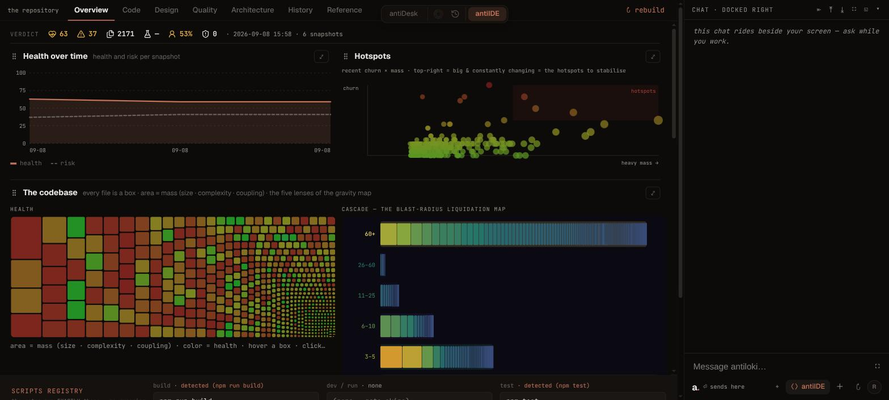
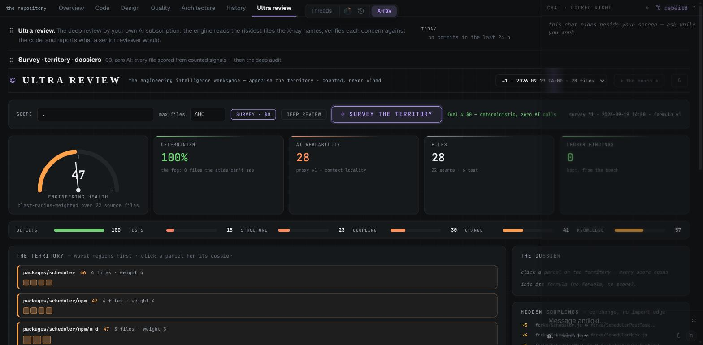
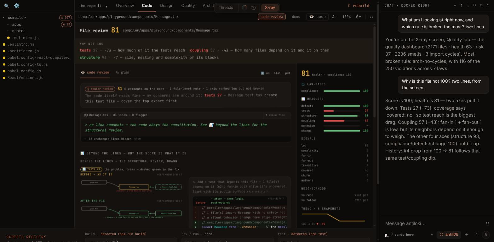

<meta charset="utf-8">
<meta name="viewport" content="width=device-width, initial-scale=1">
<title>antiloki</title>
<meta name="description" content="antiloki is the control layer for AI coding agents: Claude Code, Codex and OpenCode in parallel on your machine, boxed to folders, verified before merge, composed in threads, every change and every dollar on one timeline. Free for 7 days.">
<link rel="preconnect" href="https://fonts.googleapis.com">
<link rel="stylesheet" href="https://fonts.googleapis.com/css2?family=Bricolage+Grotesque:opsz,wght@12..96,700;12..96,800&family=IBM+Plex+Sans:wght@400;500&family=JetBrains+Mono:wght@400;600&display=swap">
<style>
  :root {
    --bg: #211e1b; --panel: #2a2521; --rule: #3b3530; --rule2: #4a433c; --ink: #efe9e2; --dim: #a3998f; --muted: #6f665e;
    --ember: #c97c5c; --ember-soft: rgba(201,124,92,.14); --ok: #7fc48f; --bad: #d9705a;
    --display: "Bricolage Grotesque", "Helvetica Neue", Arial, sans-serif; --body: "IBM Plex Sans", -apple-system, "Segoe UI", sans-serif; --mono: "JetBrains Mono", ui-monospace, Menlo, monospace;
    color-scheme: dark;
  }
  * { box-sizing: border-box; }
  html { scroll-behavior: smooth; }
  body { margin: 0; background: var(--bg); color: var(--ink); font-family: var(--body); font-size: 16px; line-height: 1.5; -webkit-font-smoothing: antialiased; }
  a { color: inherit; }
  :focus-visible { outline: 2px solid var(--ember); outline-offset: 3px; border-radius: 4px; }
  .wrap { max-width: 1080px; margin: 0 auto; padding: 0 28px; }
  h1, h2, h3 { font-family: var(--display); margin: 0; text-wrap: balance; letter-spacing: -.025em; line-height: 1.02; }
  .mono { font-family: var(--mono); } .num { font-variant-numeric: tabular-nums; }
  .eyebrow { font-family: var(--mono); font-size: 11px; letter-spacing: .14em; text-transform: uppercase; color: var(--ember); }

  nav.top .wrap { display: flex; align-items: center; height: 60px; gap: 20px; }
  .mark { display: inline-flex; align-items: center; gap: 9px; font-family: var(--display); font-weight: 800; font-size: 19px; text-decoration: none; }
  .mark i { width: 10px; height: 10px; background: var(--ember); transform: rotate(45deg); display: inline-block; }
  nav.top .sp { flex: 1; }
  nav.top a.q { text-decoration: none; color: var(--dim); font-size: 14px; } nav.top a.q:hover { color: var(--ink); }
  .btn { display: inline-flex; align-items: center; gap: 8px; padding: 12px 18px; border-radius: 10px; font-family: var(--body); font-weight: 500; font-size: 15px; text-decoration: none; border: 1px solid var(--rule2); color: var(--ink); background: transparent; cursor: pointer; transition: transform .15s ease, border-color .15s ease; }
  .btn:hover { border-color: var(--dim); transform: translateY(-1px); }
  .btn.ember { background: var(--ember); border-color: var(--ember); color: #1d1410; } .btn.ember:hover { filter: brightness(1.06); }
  .btn.sm { padding: 8px 13px; font-size: 13.5px; }

  /* hero — one problem, one promise, one proof */
  .hero { padding: 72px 0 0; text-align: center; }
  .hero h1 { font-size: clamp(40px, 5.6vw, 72px); font-weight: 800; max-width: 17ch; margin: 0 auto; }
  .hero h1 em { font-style: normal; color: var(--ember); }
  .hero p { margin: 24px auto 0; max-width: 52ch; font-size: clamp(16px, 1.5vw, 19px); color: var(--dim); }
  .hero .cta { display: flex; justify-content: center; gap: 12px; margin-top: 30px; flex-wrap: wrap; align-items: center; }
  .hero .fine { display: block; margin-top: 12px; font-family: var(--mono); font-size: 11.5px; color: var(--muted); }
  .screen { position: relative; border: 1px solid var(--rule); border-radius: 14px; overflow: hidden; background: var(--panel); box-shadow: 0 60px 120px -60px rgba(0,0,0,.8); aspect-ratio: 1440 / 860; margin-top: 48px; }
  .screen video { position: absolute; inset: 0; width: 100%; height: 100%; display: block; object-fit: cover; }
  .cap { margin: 12px auto 0; text-align: center; font-family: var(--mono); font-size: 11.5px; color: var(--muted); }

  /* the problem */
  .problem { padding: 110px 0 0; }
  .problem h2 { font-size: clamp(30px, 3.8vw, 46px); font-weight: 700; max-width: 22ch; }
  .stats { display: grid; grid-template-columns: repeat(4, 1fr); gap: 1px; background: var(--rule); border: 1px solid var(--rule); border-radius: 14px; overflow: hidden; margin-top: 36px; }
  .stat { background: var(--panel); padding: 20px 20px 22px; display: flex; flex-direction: column; gap: 8px; }
  .stat b { font-family: var(--mono); font-size: 34px; font-weight: 600; letter-spacing: -.03em; color: var(--ember); line-height: 1; }
  .stat span { font-size: 14px; color: var(--dim); line-height: 1.45; }
  .stat a { margin-top: auto; font-family: var(--mono); font-size: 10.5px; color: var(--muted); text-decoration: none; } .stat a:hover { color: var(--ink); text-decoration: underline; }
  .pains { display: grid; grid-template-columns: repeat(3, 1fr); gap: 14px; margin-top: 14px; }
  .pain { border: 1px solid var(--rule); border-radius: 14px; padding: 22px 22px 24px; background: var(--panel); }
  .pain .q { font-family: var(--display); font-size: 19px; font-weight: 700; letter-spacing: -.01em; color: var(--ink); line-height: 1.2; }
  .pain p b { color: var(--ink); font-weight: 500; }
  .bridge { padding: 110px 0 0; text-align: center; }
  .bridge h2 { font-size: clamp(28px, 3.4vw, 42px); font-weight: 700; max-width: 26ch; margin: 14px auto 0; }
  .bridge p { margin: 18px auto 0; color: var(--dim); font-size: 17px; max-width: 58ch; }
  .pain p { margin: 12px 0 0; color: var(--dim); font-size: 15px; }

  /* the three wow moments */
  .wow { padding: 120px 0 0; display: grid; grid-template-columns: minmax(0, 5fr) minmax(0, 6fr); gap: 56px; align-items: center; }
  .wow.flip { direction: rtl; } .wow.flip > * { direction: ltr; }
  .wow h2 { font-size: clamp(30px, 3.6vw, 44px); font-weight: 700; margin-top: 12px; }
  .wow p { margin: 18px 0 0; color: var(--dim); font-size: 17px; max-width: 42ch; }
  .wow .proof { margin-top: 22px; font-family: var(--mono); font-size: 12.5px; color: var(--ink); display: flex; flex-direction: column; gap: 6px; }
  .wow .proof span::before { content: "— "; color: var(--ember); }
  .wow .screen { margin: 0; aspect-ratio: 760 / 800; max-width: 520px; margin-left: auto; margin-right: auto; }

  /* wow 2 · the measurement */
  .measure { border: 1px solid var(--rule); border-radius: 14px; background: var(--panel); padding: 24px 26px; }
  .measure .t { font-family: var(--mono); font-size: 11px; color: var(--muted); margin-bottom: 18px; }
  .bars { display: grid; gap: 18px; }
  .bar { display: grid; grid-template-columns: 96px 1fr 118px; gap: 14px; align-items: center; font-family: var(--mono); font-size: 12px; }
  .bar .who { color: var(--ink); } .bar .who small { display: block; color: var(--muted); font-size: 10px; }
  .bar .track { height: 14px; background: var(--rule); border-radius: 3px; position: relative; overflow: hidden; }
  .bar .fill { position: absolute; inset: 0 auto 0 0; background: var(--dim); border-radius: 3px; width: 0; transition: width 1.2s cubic-bezier(.2,.8,.2,1); }
  .bar.win .fill { background: var(--ember); }
  .bar .val { color: var(--dim); text-align: right; } .bar .val b { color: var(--ink); font-weight: 600; }
  .verdicts { margin-top: 18px; display: grid; grid-template-columns: repeat(4, 1fr); gap: 8px; }
  .verdict { border: 1px solid var(--rule); border-radius: 8px; padding: 8px 10px; font-family: var(--mono); font-size: 10.5px; color: var(--dim); background: var(--bg); }
  .verdict b { display: block; color: var(--ok); font-weight: 600; }

  /* wow 3 · the record */
  .record { border: 1px solid var(--rule); border-radius: 14px; background: var(--bg); padding: 18px 20px; font-family: var(--mono); font-size: 12px; display: grid; gap: 18px; }
  .record .fuel { text-align: right; color: var(--muted); line-height: 1.7; } .record .fuel b { color: var(--ink); font-weight: 600; } .record .fuel .dot { display: inline-block; width: 6px; height: 6px; border-radius: 6px; background: var(--ember); margin-left: 6px; vertical-align: middle; }
  .record .tl { display: grid; gap: 4px; } .record .tl div { display: grid; grid-template-columns: 62px 10px 1fr auto; gap: 10px; align-items: center; color: var(--dim); }
  .record .tl .ts { color: var(--muted); } .record .tl i { width: 8px; height: 8px; border-radius: 8px; background: var(--ember); } .record .tl i.y { background: var(--muted); } .record .tl b { color: var(--ink); font-weight: 600; } .record .tl .no { color: var(--bad); } .record .tl .ok { color: var(--ok); } .record .tl .who { color: var(--muted); font-size: 10.5px; }

  /* the desk · threads */
  .desk { padding: 120px 0 0; }
  .desk h2 { font-size: clamp(30px, 3.6vw, 44px); font-weight: 700; margin-top: 12px; max-width: 24ch; }
  .desk > p { margin: 18px 0 0; color: var(--dim); font-size: 17px; max-width: 60ch; }
  .desk .grid { display: grid; grid-template-columns: minmax(0, 5fr) minmax(0, 7fr); gap: 40px; margin-top: 40px; align-items: start; }
  .facets { display: grid; gap: 12px; }
  .facet { border: 1px solid var(--rule); border-radius: 14px; padding: 18px 20px; background: var(--panel); }
  .facet b { font-family: var(--display); font-size: 18px; font-weight: 700; letter-spacing: -.01em; display: block; }
  .facet p { margin: 8px 0 0; color: var(--dim); font-size: 14.5px; }
  .deskmock { border: 1px solid var(--rule); border-radius: 14px; background: var(--bg); overflow: hidden; font-family: var(--mono); font-size: 11px; display: grid; grid-template-columns: 172px 1fr; min-height: 420px; position: relative; }
  .deskmock .side { border-right: 1px solid var(--rule); padding: 12px 0; color: var(--dim); }
  .deskmock .cat { font-size: 9px; letter-spacing: .14em; text-transform: uppercase; color: var(--muted); padding: 4px 14px; }
  .deskmock .th { display: flex; align-items: center; gap: 7px; padding: 5px 14px; } .deskmock .th.on { background: var(--panel); border-left: 2px solid var(--ember); color: var(--ink); }
  .deskmock .th i { width: 7px; height: 7px; border-radius: 7px; background: var(--muted); } .deskmock .th.on i { background: var(--ember); }
  .deskmock .th small { margin-left: auto; color: var(--muted); }
  .deskmock .member { padding: 2px 14px 2px 30px; color: var(--dim); font-size: 10.5px; }
  .deskmock .studio { display: grid; grid-template-columns: repeat(3, 1fr); gap: 4px; padding: 4px 10px 6px; }
  .deskmock .kind { display: flex; flex-direction: column; align-items: center; gap: 4px; padding: 7px 2px 5px; border-radius: 7px; font-size: 8.5px; color: var(--muted); }
  .deskmock .kind.sel { background: var(--panel); border: 1px solid var(--ember); color: var(--ink); }
  .deskmock .kind svg { width: 16px; height: 16px; stroke: currentColor; fill: none; stroke-width: 1.75; stroke-linecap: round; stroke-linejoin: round; }
  .deskmock .kind.a svg { color: var(--ember); } .deskmock .kind.t svg { color: var(--ok); } .deskmock .kind.d svg { color: #d8a657; } .deskmock .kind.c svg { color: var(--dim); }
  .deskmock .stage { display: grid; grid-template-columns: 1fr 1fr; grid-template-rows: 1fr 1fr; gap: 1px; background: var(--rule); }
  .deskmock .cell { background: var(--bg); padding: 9px 12px; color: var(--muted); display: flex; flex-direction: column; gap: 6px; min-height: 0; }
  .deskmock .cell.tall { grid-row: span 2; }
  .deskmock .cell .hd { display: flex; gap: 7px; align-items: center; color: var(--ink); } .deskmock .cell .hd em { font-style: normal; color: var(--ember); }
  .deskmock .cell .ln { height: 6px; border-radius: 3px; background: var(--rule); } .deskmock .cell .ln.w { width: 70%; } .deskmock .cell .ln.n { width: 45%; }
  .deskmock .cell .ok { color: var(--ok); } .deskmock .cell .no { color: var(--bad); }
  .deskmock .switch { position: absolute; top: 8px; left: 50%; transform: translateX(-50%); display: flex; align-items: center; gap: 2px; padding: 2px; border-radius: 9px; background: var(--panel); border: 1px solid var(--rule2); font-size: 10.5px; }
  .deskmock .switch span { padding: 3px 10px; border-radius: 7px; color: var(--dim); } .deskmock .switch span.on { background: var(--ember-soft); color: var(--ember); }
  .deskmock .switch .mid { display: flex; gap: 6px; padding: 0 8px; border-left: 1px solid var(--rule2); border-right: 1px solid var(--rule2); margin: 0 2px; }
  .deskmock .switch .mid svg { width: 14px; height: 14px; stroke: var(--dim); fill: none; stroke-width: 1.75; }
  .deskmock .switch .mid .ring { width: 14px; height: 14px; border-radius: 14px; border: 2px solid var(--rule2); border-top-color: var(--ember); border-right-color: var(--ember); }

  /* who + local */
  .fit { padding: 120px 0 0; text-align: center; }
  .fit h2 { font-size: clamp(28px, 3.4vw, 40px); font-weight: 700; }
  .fit p { margin: 18px auto 0; color: var(--dim); font-size: 17px; max-width: 58ch; }
  .fit .row { display: flex; justify-content: center; gap: 28px; flex-wrap: wrap; margin-top: 26px; font-family: var(--mono); font-size: 12.5px; color: var(--ink); }
  .fit .row span::before { content: "◆ "; color: var(--ember); }

  /* pricing */
  .pricing { padding: 120px 0 0; text-align: center; }
  .pricing h2 { font-size: clamp(30px, 3.6vw, 44px); font-weight: 700; }
  .plans { display: grid; grid-template-columns: repeat(3, 1fr); gap: 14px; margin-top: 34px; text-align: left; }
  .plan { border: 1px solid var(--rule); border-radius: 14px; padding: 24px; background: var(--panel); display: flex; flex-direction: column; gap: 12px; position: relative; }
  .plan.lift { border-color: var(--ember); background: linear-gradient(180deg, var(--ember-soft), var(--panel) 60%); }
  .plan .name { font-family: var(--display); font-weight: 700; font-size: 20px; }
  .plan .price { font-family: var(--mono); font-size: 40px; font-weight: 600; letter-spacing: -.03em; line-height: 1; }
  .plan .price small { font-size: 12px; font-weight: 400; color: var(--muted); letter-spacing: 0; margin-left: 6px; }
  .plan.lift .price { color: var(--ember); }
  .plan ul { list-style: none; margin: 0; padding: 0; display: flex; flex-direction: column; gap: 6px; font-size: 14.5px; color: var(--dim); }
  .plan ul li::before { content: "— "; color: var(--muted); } .plan ul li b { color: var(--ink); font-weight: 500; }
  .plan .btn { margin-top: auto; justify-content: center; }
  .plan .best { position: absolute; top: -11px; left: 22px; font-family: var(--mono); font-size: 10px; letter-spacing: .12em; text-transform: uppercase; background: var(--ember); color: #1d1410; padding: 3px 8px; border-radius: 5px; font-weight: 600; }
  .terms { margin: 16px auto 0; font-family: var(--mono); font-size: 11.5px; color: var(--muted); max-width: 70ch; }

  /* download + faq */
  .download { padding: 120px 0 0; text-align: center; }
  .download h2 { font-size: clamp(30px, 3.6vw, 44px); font-weight: 700; }
  .dl { display: grid; grid-template-columns: repeat(3, 1fr); gap: 14px; margin-top: 34px; }
  .os { border: 1px solid var(--rule); border-radius: 14px; padding: 20px 22px; background: var(--panel); text-decoration: none; display: flex; flex-direction: column; gap: 4px; text-align: left; transition: border-color .15s ease, transform .15s ease; }
  .os:hover { border-color: var(--dim); transform: translateY(-2px); } .os.me { border-color: var(--ember); }
  .os b { font-family: var(--display); font-weight: 700; font-size: 22px; } .os span { font-family: var(--mono); font-size: 11.5px; color: var(--dim); }
  .os em { font-style: normal; margin-top: 8px; color: var(--ember); font-size: 14px; }
  .needs { margin-top: 18px; font-family: var(--mono); font-size: 12px; color: var(--muted); }
  .faq { padding: 90px 0 80px; max-width: 760px; margin: 0 auto; }
  .faq details { border-top: 1px solid var(--rule); padding: 16px 0; } .faq details:last-child { border-bottom: 1px solid var(--rule); }
  .faq summary { cursor: pointer; font-weight: 500; font-size: 16px; list-style: none; display: flex; justify-content: space-between; gap: 20px; }
  .faq summary::-webkit-details-marker { display: none; } .faq summary::after { content: "+"; font-family: var(--mono); color: var(--muted); } .faq details[open] summary::after { content: "–"; }
  .faq p { margin: 10px 0 0; color: var(--dim); font-size: 15px; }

  footer { border-top: 1px solid var(--rule); padding: 28px 0 40px; font-family: var(--mono); font-size: 11.5px; color: var(--muted); }
  footer .wrap { display: flex; gap: 22px; flex-wrap: wrap; align-items: center; } footer a { color: var(--dim); text-decoration: none; } footer .r { margin-left: auto; }

  @media (max-width: 900px) {
    .pains, .plans, .dl, .verdicts { grid-template-columns: 1fr; } .stats { grid-template-columns: 1fr 1fr; }
    .wow, .wow.flip { grid-template-columns: 1fr; direction: ltr; gap: 28px; padding-top: 80px; }
    .desk { padding-top: 80px; } .desk .grid { grid-template-columns: 1fr; } .deskmock { grid-template-columns: 1fr; } .deskmock .side { display: none; }
    .problem, .fit, .pricing, .download, .bridge { padding-top: 80px; }
    nav.top a.q { display: none; }
  }
  @media (prefers-reduced-motion: reduce) { *, *::before, *::after { transition: none !important; } html { scroll-behavior: auto; } .bar .fill { transition: none; } }
</style>

<nav class="top"><div class="wrap">
  <a class="mark" href="#top"><i></i>antiloki</a>
  <span class="sp"></span>
  <a class="q" href="#desk">Threads</a>
  <a class="q" href="#xray">X-ray</a>
  <a class="q" href="#pricing">Pricing</a>
  <a class="q" href="demo.html" target="_blank" rel="noopener">Live demo</a>
  <a class="btn sm ember" href="#download">Download · free 7 days</a>
</div></nav>

<main id="top">
  <!-- HERO — what it is, and the one reason -->
  <div class="wrap hero">
    <span class="eyebrow">antiloki · a desktop app · macOS · Windows · Linux</span>
    <h1 style="margin-top:14px">The control layer for <em>AI coding agents.</em></h1>
    <p>Your team already runs Claude Code, Codex or OpenCode. antiloki is where they work: on your machine, in parallel, each locked to the folders you allow, each task verified before it merges, every change and every dollar on one timeline. <b>It runs on the subscription you already pay for</b> — every AI call antiloki makes, the chat included, goes through your own CLI; no API key. You compose the desk in <b>threads</b> — the chat, the agents and the tools one job needs, side by side. Not another agent — the desk that makes the ones you have safe to scale.</p>
    <div class="cta"><a class="btn ember" href="#download">Download — free for 7 days</a><a class="btn" href="demo.html" target="_blank" rel="noopener">Try the live demo →</a></div>
    <span class="fine">one binary · no account · no API key — your subscription is the engine</span>
    <div class="screen" style="aspect-ratio: 1568 / 707"></div>
    <p class="cap">the real app · X-ray on the React repository — 2,171 files judged · the map, the hotspots, the trend · the chat beside it, reading the same screen</p>
  </div>

  <!-- HOW TEAMS WORK TODAY — the research -->
  <div class="wrap problem">
    <span class="eyebrow">how teams work today</span>
    <h2 style="margin-top:12px">Adoption is done. Trust and control never arrived.</h2>
    <div class="stats">
      <div class="stat"><b>90 %</b><span>of professional developers use coding agents weekly; 68 % daily.</span><a href="https://blog.jetbrains.com/research/2026/08/ai-coding-agent-adoption-2026/" target="_blank" rel="noopener">JetBrains, 2026</a></div>
      <div class="stat"><b>29 %</b><span>trust what the agent produces — down from 40 %. 3 % "highly trust" it. 7 in 10 won't merge without a manual review.</span><a href="https://byteiota.com/stack-overflow-dev-survey-2026-ai-at-84-trust-at-3/" target="_blank" rel="noopener">Stack Overflow, 2026</a></div>
      <div class="stat"><b>+200 %</b><span>code output per engineer in a year. Review throughput: flat. Review — not generation — is the bottleneck.</span><a href="https://www.contextstudios.ai/blog/run-10-claude-code-agents-review-is-your-real-bottleneck" target="_blank" rel="noopener">Anthropic, internal</a></div>
      <div class="stat"><b>9 s</b><span>for an agent to delete a production database and its backups — after quoting the rule that forbade it. 93 % of orgs have had an AI-caused incident; 19 % have governance for the next one.</span><a href="https://bex.co/blog/2026/07/11/vibe-coding-incident-guardrails" target="_blank" rel="noopener">PocketOS · Spacelift, 2026</a></div>
    </div>
    <div class="pains">
      <div class="pain"><div class="q">Rules in a prompt are not enforcement.</div><p>"Don't touch production" lived in the agent's instructions. It read them, and ran the delete anyway. What an agent <b>may</b> do has to be enforced by the tool, not requested of the model.</p></div>
      <div class="pain"><div class="q">More agents means more to supervise, not less.</div><p>At five or six agents on one repo the questions become: which one is blocked, which one changed the wrong file, which branch is safe to merge. The operator becomes the bottleneck.</p></div>
      <div class="pain"><div class="q">Nobody can say what it changed or what it cost.</div><p>Review finds it late, production finds it later, the invoice finds it at month end. Trust stays at 29 % because there is no record to check.</p></div>
    </div>
  </div>

  <div class="wrap bridge">
    <span class="eyebrow">what antiloki is</span>
    <h2>A desktop app that gives every agent a box, every task a verdict, and every action a line on the record.</h2>
    <p>It runs the CLIs you already pay for — Claude Code, Codex, OpenCode — side by side on one repository. Three things make that safe, and they map to the three problems above.</p>
  </div>

  <!-- WOW 1 — the box -->
  <div class="wrap wow">
    <div>
      <span class="eyebrow">1 · the box — enforcement, not instructions</span>
      <h2>An agent writes only where you allowed. Enforced at the tool call.</h2>
      <p>Start an agent from one card: the engine, the folders it may touch, what to do. A write anywhere else is refused <b>before the file changes</b> — by the tool, not by a sentence in the prompt. The nine-second deletion can't happen from inside a box.</p>
      <div class="proof"><span>the rule lives in the hook, not in the model's memory</span><span>each agent in its own git worktree — no collisions</span><span>one diff across all worktrees before you merge</span></div>
    </div>
    <div class="screen"><video autoplay muted loop playsinline preload="metadata" poster="img/02-agent-poster.jpg"><source src="img/02-agent.mp4" type="video/mp4"></video></div>
  </div>

  <!-- WOW 2 — the verdict -->
  <div class="wrap wow flip">
    <div>
      <span class="eyebrow">2 · the verdict — review that scales with the agents</span>
      <h2>Work splits into parallel tasks; every piece is verified before one join.</h2>
      <p>Review can't keep up with generation — so the review happens as the work does. The agent splits a goal into owned tasks, runs them in parallel, and a verifier judges each one before a single join reaches you. You review one verified change list, not six raw branches.</p>
      <div class="proof"><span>a verdict per task, before it merges</span><span>26 % faster than one agent alone, 4 of 4 PASS</span><span>about 2× the tokens — and you see that number too</span></div>
      <p style="margin-top:14px">Any of the three can be the parent. On one afternoon, on the React repository: <b>Claude</b> delegated two edits, 2 of 2 verified in 85 s; <b>Codex</b> on the ChatGPT plan, 2 of 2 in 76 s; <b>OpenCode</b> on the Go plan (DeepSeek), 2 of 2 in 63 s. Each run ended the same way — <b>a pull request</b> in antiloki: the goal as its title, the verified report as its body, the diff, the proof suite and a safe merge one click away.</p>
    </div>
    <div class="measure">
      <div class="t">same goal · same machine · same model — survey 4 packages, fix their flaky tests</div>
      <div class="bars">
        <div class="bar"><div class="who">one agent<small>hit the turn cap</small></div><div class="track"><div class="fill" data-w="100"></div></div><div class="val num"><b>513 s</b> · $3.08</div></div>
        <div class="bar win"><div class="who">goal run<small>4 verified tasks</small></div><div class="track"><div class="fill" data-w="74.1"></div></div><div class="val num"><b>380 s</b> · $5.86</div></div>
      </div>
      <div class="verdicts"><div class="verdict"><b>PASS</b>compiler/apps</div><div class="verdict"><b>PASS</b>playground</div><div class="verdict"><b>PASS</b>runtime</div><div class="verdict"><b>PASS</b>docs-site</div></div>
    </div>
  </div>

  <!-- THE CONTEXT LIBRARY — one place for every context -->
  <div class="wrap wow">
    <div>
      <span class="eyebrow">the context library — every memory, one place</span>
      <h2>Claude remembers. Codex remembers. Your team's rules live in six files. antiloki reads them all — and lets you pack them.</h2>
      <p>The library shows every context on your machine: Claude Code's project memory and CLAUDE.md, Codex's memory and the AGENTS.md it reads, OpenCode's sessions, and antiloki's own — session docs, papers, skills. Read-only for the agents' stores, always. Pick the chunks that matter, consolidate them into a named pack, and that pack is one chip away in every agent's scope, every mission, every notebook and the chat.</p>
      <div class="proof"><span>the AIs' memories, read-only</span><span>chunks → a pack, with provenance</span><span>reachable from every context selection</span></div>
    </div>
  </div>

  <!-- WOW 3 — the record -->
  <div class="wrap wow">
    <div>
      <span class="eyebrow">3 · the record — the trust you can check</span>
      <h2>Every change and every dollar, on one timeline you can read like a stack trace.</h2>
      <p>Trust needs a record. Each tool call, refusal, verdict and merge lands on one line, with the engine that did it. Tokens, cost and your 5-hour and weekly limits for all three CLIs sit in the corner while it runs — not on next month's invoice.</p>
      <div class="proof"><span>"what did the AI change?" — answered in one screen</span><span>cost per task, live, per engine</span><span>hand the timeline to a reviewer, a client, or security</span></div>
    </div>
    <div class="record">
      <div class="fuel"><div>claude — <b>41k tok · $1.20</b> · 5h 62% · wk 18%<span class="dot"></span></div><div>codex — <b>9k tok · $0.31</b> · 5h 12% · wk 4%<span class="dot"></span></div><div>opencode not running</div></div>
      <div class="tl">
        <div><span class="ts">14:53:05</span><i></i><span><b>join</b> · one change list · 3 files · tests 6/6 · delivered</span><span class="who">claude</span></div>
        <div><span class="ts">14:52:40</span><i></i><span><b>verify</b> · <span class="ok">PASS · PASS · PASS · PASS</span></span><span class="who">claude</span></div>
        <div><span class="ts">14:48:19</span><i></i><span><b>task 2</b> · playground · 2 files · owned only</span><span class="who">claude</span></div>
        <div><span class="ts">14:47:41</span><i></i><span><b>refused</b> · <span class="no">Edit package.json — outside src/**</span></span><span class="who">codex</span></div>
        <div><span class="ts">14:47:05</span><i></i><span><b>goal</b> · planned · 4 tasks · 1 wave</span><span class="who">claude</span></div>
        <div><span class="ts">14:46:12</span><i class="y"></i><span><b>started</b> · Codex · migrate v3 · writes src/api/**</span><span class="who">you</span></div>
      </div>
    </div>
  </div>

  <!-- THE X-RAY — the analysis screen, and the chat that reads it -->
  <div class="wrap desk" id="xray">
    <span class="eyebrow">the x-ray · the analysis, judged</span>
    <h2>Every file judged, every number explained — and a chat that reads the same screen.</h2>
    <p>The X-ray scores the repository against your rules and its own measurements (tests, coupling, structure, change) and tells you <b>why a file is not 100</b>. Then the ultra review: a $0 survey of the territory, the worst units ranked, and your own engine reading them to report what it can verify — with the fix. Every section drags into the chat as context; the chat already sees the brief and the open file's dossier.</p>
    <div class="screen" style="aspect-ratio: 1568 / 770; margin-top:18px"></div>
    <p class="cap">the Ultra review · the $0 survey of packages/scheduler — health 47, the axes, the territory · the engine's verified findings follow below it</p>
    <div class="screen" style="aspect-ratio: 1568 / 770; margin-top:18px"></div>
    <p class="cap">the chat sees the screen · “what am I looking at?” → the Quality tab and the most-broken rule · “why is this file not 100?” → the two axes that cost it, from the dossier</p>
  </div>

  <!-- WHO + LOCAL -->
  <!-- THE DESK — threads: how the three things above are actually used, day to day -->
  <div class="wrap desk" id="desk">
    <span class="eyebrow">the desk · threads, not tabs</span>
    <h2>One job, one thread: the chat, the agents and the tools it needs, side by side.</h2>
    <p>A thread is a named split of live widgets. Open one for the migration, one for the review, one for the design pass — each holds exactly what that job needs. An agent in two threads is the same live agent; close a thread and nothing dies.</p>
    <div class="grid">
      <div class="facets">
        <div class="facet"><b>Everything is a widget — the chat included.</b><p>antiChat, Claude Code, Codex, OpenCode, terminal, kanban, diff, standup, the code graph, the design system: one catalog. Add any of them to a thread, drag them into place, resize the seams.</p></div>
        <div class="facet"><b>The Studio shows the real thing before you add it.</b><p>Pick a kind and you see it at full size with a worked example, what it does, how to use it and what it costs — then <i>new thread</i> or <i>add here</i>. No empty panes to figure out.</p></div>
        <div class="facet"><b>Fuel and the timeline ride the top of every view.</b><p>Two small instruments between <i>Threads</i> and <i>X-ray</i>: the donut is your 5-hour and weekly limits per engine, the clock is the day's record — every row explains itself. Hover for the numbers, click for the window.</p></div>
        <div class="facet"><b>Two screens, one chat.</b><p><i>Threads</i> for the work, <i>X-ray</i> for the analysis. The chat rides beside both and sees what you see — the thread, or the open file's dossier and the numbers on the dashboard.</p></div>
      </div>
      <div class="deskmock" aria-label="the Threads view: threads and the Studio on the left, the active thread's split on the right; fuel and timeline in the top switch">
        <div class="switch"><span class="on">Threads</span><span class="mid"><i class="ring"></i><svg viewBox="0 0 24 24"><path d="M3 12a9 9 0 1 0 9-9 9.75 9.75 0 0 0-6.74 2.74L3 8"/><path d="M3 3v5h5"/><path d="M12 7v5l4 2"/></svg></span><span>X-ray</span></div>
        <div class="side">
          <div class="cat">threads</div>
          <div class="th on"><i></i>auth refresh<small>3</small></div>
          <div class="member">◆ Claude Code · wt/auth-refresh</div><div class="member">◆ diff</div><div class="member">◆ chat</div>
          <div class="th"><i></i>design pass<small>2</small></div>
          <div class="th"><i></i>reading<small>1</small></div>
          <div class="cat" style="margin-top:8px">studio · agents</div>
          <div class="studio">
            <div class="kind a"><svg viewBox="0 0 24 24"><path d="M14 9a2 2 0 0 1-2 2H6l-4 4V4c0-1.1.9-2 2-2h8a2 2 0 0 1 2 2z"/><path d="M18 9h2a2 2 0 0 1 2 2v11l-4-4h-6a2 2 0 0 1-2-2v-1"/></svg>antiChat</div>
            <div class="kind a sel"><svg viewBox="0 0 24 24"><path d="M9.9 2.8 11 6l3.2 1.1L11 8.2 9.9 11.4 8.8 8.2 5.6 7.1 8.8 6z"/><path d="M18 12l.9 2.6 2.6.9-2.6.9L18 19l-.9-2.6-2.6-.9 2.6-.9z"/><path d="M5 17l.5 1.5L7 19l-1.5.5L5 21l-.5-1.5L3 19l1.5-.5z"/></svg>Claude Code</div>
            <div class="kind a"><svg viewBox="0 0 24 24"><path d="M12 8V4H8"/><rect width="16" height="12" x="4" y="8" rx="2"/><path d="M2 14h2M20 14h2M15 13v2M9 13v2"/></svg>Codex</div>
          </div>
          <div class="cat">studio · tools</div>
          <div class="studio">
            <div class="kind t"><svg viewBox="0 0 24 24"><path d="m4 17 6-6-6-6M12 19h8"/></svg>Terminal</div>
            <div class="kind t"><svg viewBox="0 0 24 24"><rect width="18" height="18" x="3" y="3" rx="2"/><path d="M8 7v7M12 7v4M16 7v9"/></svg>Kanban</div>
            <div class="kind t"><svg viewBox="0 0 24 24"><circle cx="5" cy="6" r="3"/><path d="M12 6h5a2 2 0 0 1 2 2v7"/><path d="m15 9-3-3 3-3"/><circle cx="19" cy="18" r="3"/><path d="M12 18H7a2 2 0 0 1-2-2V9"/><path d="m9 15 3 3-3 3"/></svg>Diff</div>
          </div>
        </div>
        <div class="stage">
          <div class="cell tall"><div class="hd"><em>✦</em>Claude Code <span style="color:var(--muted)">wt/auth-refresh · src/auth/**</span></div><div class="ln w"></div><div class="ln"></div><div class="ln n"></div><div class="ok">● edit src/auth/session.ts +18 −4</div><div class="ok">● run npm test — 12 passed</div><div class="no">✕ refused · Edit package.json — outside src/**</div><div class="ln n"></div></div>
          <div class="cell"><div class="hd"><em>◆</em>diff <span style="color:var(--muted)">2 files</span></div><div class="ln w"></div><div class="ok">+ if (s.expiresAt - now() &gt; 60_000) return s;</div><div class="no">− return refresh(s);</div><div class="ok">+ return refresh(s, { retry: 1 });</div></div>
          <div class="cell"><div class="hd"><em>◆</em>chat <span style="color:var(--muted)">episode #4</span></div><div class="ln w"></div><div class="ln"></div><div style="border:1px solid var(--rule);border-radius:8px;padding:6px 8px;margin-top:auto;color:var(--muted)">Message antiloki… (@ context · # widget)</div></div>
        </div>
      </div>
    </div>
    <p class="cap">the Threads view · the Studio catalog on the left, the active thread on the right · fuel and the timeline in the switch</p>
  </div>

  <div class="wrap fit">
    <h2>Built for the engineer who already pays for two or three agent subscriptions.</h2>
    <p>You keep your CLIs. Every AI call antiloki itself makes — the chat that sees your screen, the file reviews, the descriptions, the plans, the ultra review — runs on those subscriptions, per tier (high · mid · low), headless and read-only. An OpenRouter key or a local Ollama model are options, never requirements. One Rust binary on your laptop, its state in a folder next to your code, nothing sent anywhere except the calls your CLIs already make.</p>
    <div class="row"><span>no account</span><span>no telemetry</span><span>works offline</span><span>delete the folder, it's gone</span></div>
  </div>

  <!-- PRICING -->
  <div class="wrap pricing" id="pricing">
    <h2>Free for a week. Then $200 a year, or $500 once.</h2>
    <div class="plans">
      <div class="plan"><div class="name">Trial</div><div class="price num">$0<small>7 days</small></div><ul><li><b>everything</b> — Threads and X-ray</li><li>no card, no account</li><li>your projects stay when it ends</li></ul><a class="btn" href="#download">Download</a></div>
      <div class="plan"><div class="name">Yearly</div><div class="price num">$200<small>/ year</small></div><ul><li><b>updates + support</b> for the year</li><li>one machine at a time, move it anytime</li><li>cancel anytime — runs to the end of the year</li></ul><a class="btn" href="#download" data-checkout="yearly">Buy a year</a></div>
      <div class="plan lift"><span class="best">pay once</span><div class="name">Lifetime</div><div class="price num">$500<small>once</small></div><ul><li><b>yours forever</b> — never expires</li><li><b>2 years</b> of updates + support</li><li>one machine at a time, move it anytime</li></ul><a class="btn ember" href="#download" data-checkout="lifetime">Buy lifetime</a></div>
    </div>
    <p class="terms">USD · tax at checkout · key by email, pasted once · works offline up to 14 days between checks · invoices with VAT for companies</p>
  </div>

  <!-- DOWNLOAD -->
  <div class="wrap download" id="download">
    <h2>Install. Open a repo. Start an agent.</h2>
    <div class="dl">
      <a class="os" data-os="mac" href="https://github.com/danilosilvadev/antiloki-core-rust/releases/latest"><b>macOS</b><span>Apple silicon · Intel · .dmg</span><em>Download ↓</em></a>
      <a class="os" data-os="win" href="https://github.com/danilosilvadev/antiloki-core-rust/releases/latest"><b>Windows</b><span>.exe · .msi · x64</span><em>Download ↓</em></a>
      <a class="os" data-os="linux" href="https://github.com/danilosilvadev/antiloki-core-rust/releases/latest"><b>Linux</b><span>.deb · .AppImage · x64</span><em>Download ↓</em></a>
    </div>
    <p class="needs">needs git and at least one of <b>claude</b> · <b>codex</b> · <b>opencode</b> signed in · or <a href="demo.html" target="_blank" rel="noopener" style="color:var(--ember)">try the live demo first</a></p>
  </div>

  <div class="wrap faq">
    <details><summary>What is antiloki, in one sentence?</summary><p>A desktop app that runs your coding agents in parallel on your machine with folder-level write enforcement, per-task verification and a full audit timeline — the control layer the agents don't ship with.</p></details>
    <details><summary>Does it replace Claude Code, Codex or OpenCode?</summary><p>No — it runs them, twice over: as the agents in their boxes, and as the engine behind antiloki's own AI (the chat, the reviews, the ultra review). Keep your subscriptions; there is no API key to paste.</p></details>
    <details><summary>What does the X-ray do that a linter doesn't?</summary><p>It judges every file against your rules and its own measurements (tests, coupling, structure, change) and tells you why a file is not 100. Then the ultra review: a $0 survey of the territory, and your engine reading the worst units to report what it can verify — with the fix. The chat sees all of it, so "why is this file 81?" gets a real answer.</p></details>
    <details><summary>Isn't this just worktrees and tmux?</summary><p>Worktrees are the easy part. The write gate at the tool call, the verifier before merge and the cost-per-task record are what you can't script in an afternoon — and what the trial is for.</p></details>
    <details><summary>2× the tokens sounds expensive.</summary><p>It is more. That's why the bill is on screen and the agent decides when splitting is worth it — in our run it declined a small task on its own. You pay for verification, not speed.</p></details>
    <details><summary>Can my company install it?</summary><p>One binary, local, no account, no telemetry. The complete list of network calls is: your CLIs' own calls, a daily license check, an update check against a static file. Send that to security.</p></details>
  </div>
</main>

<footer><div class="wrap">
  <span>antiloki · Threads · X-ray</span>
  <a href="https://github.com/danilosilvadev/antiloki-core-rust/releases/latest">releases</a>
  <a href="demo.html">live demo</a>
  <a href="mailto:support@antiloki.dev">support@antiloki.dev</a>
  <span class="r">© 2026 antiloki</span>
</div></footer>

<script>
  // store links — set once the store exists; until then every buy button leads to the trial
  const CHECKOUT = { yearly: "", lifetime: "" };
  for (const a of document.querySelectorAll("[data-checkout]")) { const u = CHECKOUT[a.dataset.checkout]; if (u) { a.href = u; a.target = "_blank"; a.rel = "noopener"; } }
  // the bars grow when they come into view (or sit at full width without motion)
  const fills = document.querySelectorAll(".bar .fill");
  const grow = () => fills.forEach((f) => { f.style.width = f.dataset.w + "%"; });
  if (matchMedia("(prefers-reduced-motion: reduce)").matches || !("IntersectionObserver" in window)) grow();
  else { const io = new IntersectionObserver((es) => { if (es.some((e) => e.isIntersecting)) { grow(); io.disconnect(); } }, { threshold: .4 }); io.observe(document.querySelector(".measure")); }
  // light up the visitor's OS
  const ua = navigator.userAgent, os = /Mac/.test(ua) ? "mac" : /Win/.test(ua) ? "win" : /Linux/.test(ua) ? "linux" : null;
  if (os) document.querySelector(`.os[data-os="${os}"]`)?.classList.add("me");
  // THE DOWNLOAD BUTTONS (2026-09-21): each links straight to the installer of the latest release — resolved from
  // the public releases repository at load time (the GitHub API answers cross-origin for a public repo); until it
  // answers, or if it never does, the buttons keep pointing at the releases page itself.
  const RELEASES = "danilosilvadev/antiloki-releases";
  const PICK = { mac: [/\.dmg$/], win: [/-setup\.exe$/, /\.msi$/], linux: [/\.AppImage$/, /\.deb$/] };
  for (const a of document.querySelectorAll(".os, a[href*='/releases/latest']")) if (a.getAttribute("href")?.includes("/releases/latest")) a.href = `https://github.com/${RELEASES}/releases/latest`;
  fetch(`https://api.github.com/repos/${RELEASES}/releases/latest`, { headers: { accept: "application/vnd.github+json" } }).then((r) => (r.ok ? r.json() : null)).then((rel) => {
    if (!rel || !Array.isArray(rel.assets)) return;
    for (const [key, pats] of Object.entries(PICK)) {
      const a = document.querySelector(`.os[data-os="${key}"]`); if (!a) continue;
      const asset = pats.map((re) => rel.assets.find((x) => re.test(x.name))).find(Boolean);
      if (asset) { a.href = asset.browser_download_url; a.querySelector("em").textContent = `Download ${rel.tag_name} ↓`; a.title = `${asset.name} · ${(asset.size / 1048576).toFixed(0)} MB`; }
    }
  }).catch(() => {});
</script>
